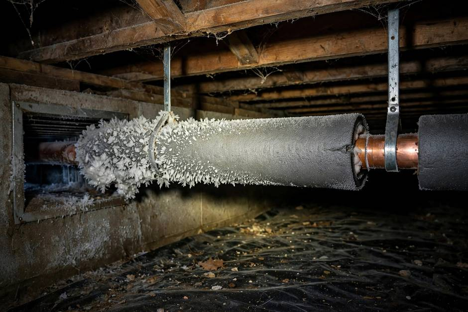
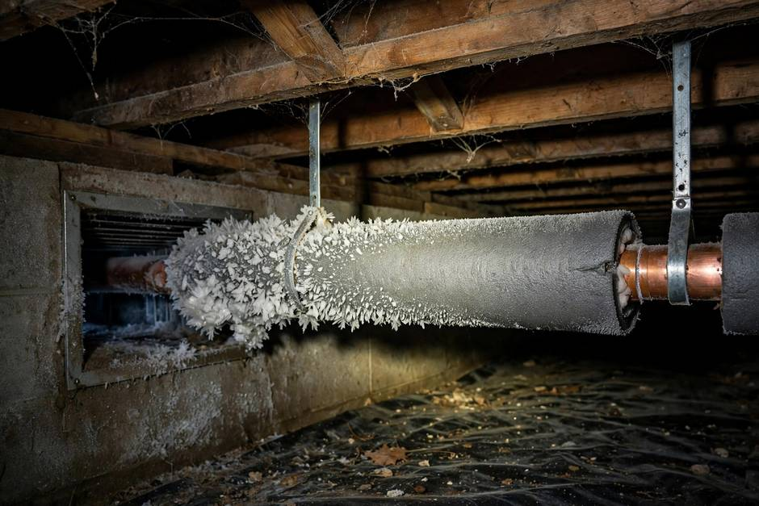
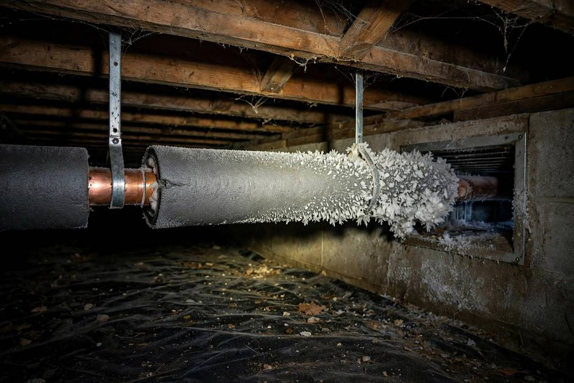
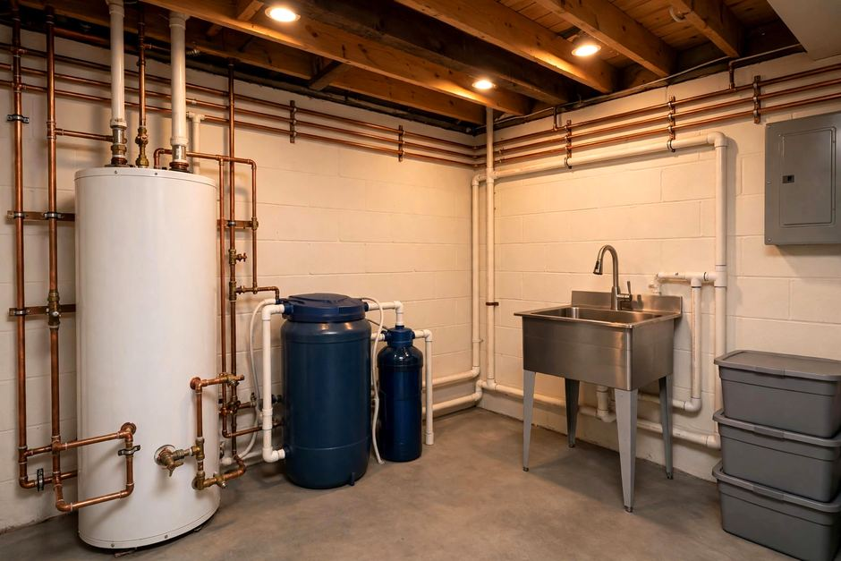

Burst and Frozen Pipe Repair
Burst Pipe Repair Belleville IL for Frozen and Burst Pipes
A frozen pipe in Belleville, IL can split while ice forms, and the leak may only appear when water flows again. Hinkle Plumbing Company checks frozen and burst pipes, looks for the damaged section, and discusses repair options for the pipe and the area around it. Call (618) 677-6556 during weekday hours to describe what you see.
1610 W Main St, Belleville, IL 62220Monday through Friday, 8:00 AM to 4:30 PM. Closed Saturday and Sunday.About 100.3 days a year with a low at or below 32°F, SIU station 110510, 1971-2000 normals.
What This Page Covers
Burst and Frozen Pipe Checks and Repair in Belleville, IL
This page covers the full arc from a frozen section to a burst pipe and the repair that follows. For a wider look at urgent plumbing calls, see emergency plumbing services in Belleville, IL, and for hidden water loss, see the checks described on the leak detection page.
Frozen Pipe Location Checks
Checks focus on finding the frozen section, often in an exterior wall, a crawlspace, or an unconditioned space. The pipe, nearby joints, and shutoff valves are checked for splits, bulges, and signs of water movement.
Burst Pipe Section Repair
A damaged section is cut out and a replacement section is joined in, with material matched to the pipe at hand, such as copper, PEX, PVC, cast iron, or galvanized pipe. Joints are checked after the repair for leaks.
Leak Checks After a Freeze
A split may stay hidden while ice blocks the pipe and show only when water flows again. After a repair, nearby joints, fittings, and fixtures are checked for drips, damp patches, and water showing where it should stay dry.
Shutoff and Isolation Checks
The main shutoff and fixture shutoffs are checked so water can be stopped at the right point while repair work is planned. A shutoff that sticks or leaks is noted, and repair options for the valve are discussed.
Exterior Wall and Crawlspace Pipe Checks
Pipes in exterior walls, crawlspaces, and unconditioned spaces face the coldest exposure in a home. Checks look at insulation around the pipe, gaps that let cold air reach it, and signs of past splitting at joints and bends.
Cold-Weather Prevention Checks
Before cold weather, pipes in exposed spots are checked for insulation, hose bibs are checked for shutoff and drainage, and shutoff locations are noted. These checks aim to lower the chance of a frozen section during a cold spell.
About Hinkle Plumbing Company
A Belleville, IL Plumber for Burst and Frozen Pipes
Hinkle Plumbing Company is based in Belleville, IL, and works on burst and frozen pipes in homes in Belleville, IL. Calls are taken during weekday hours, and each job starts with a discussion of what was found.
Belleville, in St. Clair County, sees cold spells in winter. SIU station 110510 1971-2000 normals put the January high at 39.6°F and the low at 22.1°F, with about 100.3 days a year with a low at or below 32°F and a record low of -27°F on 17 Jan 1977. In older homes, expect to check for galvanized supply pipe and cast-iron drains, while later homes more often show copper or PEX supply with PVC drains. For hidden water loss after a freeze, see leak detection in Belleville, IL.

How we workImage shows exposed pipework with insulation in an unconditioned space.
How the Work Proceeds
From the Call to the Final Leak Check
The steps flex with the condition of the job, but the sequence stays the same.
Describe What You See
On the call, describe which fixture lost water, where water is showing, and whether the main shutoff has been turned off. That detail shapes the checks that follow and the repair options discussed for the pipe.
Control the Water
If water is flowing, the main shutoff is the first control point, followed by fixture shutoffs where they exist. Stopping the flow limits water spread while the damaged section is located and the repair scope is discussed.
Locate the Damaged Section
Checks move along the pipe run, with attention to exterior walls, crawlspaces, and unconditioned spaces where a frozen section is more likely. Joints, bends, and shutoff valves are checked for splits and signs of water movement.
Discuss the Repair Scope
The repair scope is discussed before work starts, covering the damaged section, the material at hand, access to the pipe, and the checks that follow the repair. Questions about the work are answered on the call.
Check After the Repair
After the repair, water is turned back on in a controlled way and joints, fittings, and nearby fixtures are checked for leaks. Insulation and exposure around the repaired section are also checked, and any further checks are noted.
Repair Methods
Methods Used for Burst and Frozen Pipes
Methods depend on the pipe material, the location of the damage, and how much of the run is affected. Each method below is part of the wider plumbing repairs in Belleville, IL offered from the W Main St base.
Section Replacement
The damaged section is removed and a replacement section is joined in place, with fittings suited to the material at hand. This method suits a clear split in one section where the pipe around it remains sound.
Material-Matched Joining
Copper, PEX, PVC, cast iron, and galvanized pipe each call for joining suited to that material. The joining method is chosen for the pipe at hand, and joints are checked after the work for drips and damp patches.
Joint and Fitting Checks
Joints and fittings near a frozen section are checked for splits, movement, and water showing at the joint. A fitting that shows damage is discussed as part of the repair scope, rather than left to leak after the repair.
Shutoff Valve Checks
Shutoff valves on the affected run are checked for sticking, leaking, and full closure. A valve that fails to close is noted in the repair scope, so water control at that point is understood before further work is planned.
Insulation and Exposure Checks
Insulation around pipes in exterior walls, crawlspaces, and unconditioned spaces is checked for gaps, damage, and missing sections. Gaps that let cold air reach the pipe are noted, and insulation options for the exposed run are discussed.
Leak Checks After Repair
After a repair, the run is checked with water flowing, and joints, fittings, and nearby fixtures are watched for drips. Damp patches on walls, floors, and ceilings near the run are also checked, and any further checks are noted.
Common Patterns
How Burst and Frozen Pipe Calls Usually Present
The patterns below describe calls of a kind seen in cold weather in Belleville, IL. Each pattern starts with a symptom, moves through checks, and ends with a repair scope discussed with the caller.

No Water at a Fixture in Cold Weather
A common call describes a fixture with no water during a cold spell, while other fixtures in the home still run. Checks look for a frozen section in an exterior wall, a crawlspace, or an unconditioned space along the pipe run to that fixture. Joints and shutoff valves near the frozen section are checked for splits, and the repair scope is discussed once the damaged section is located. After the repair, the fixture and nearby joints are checked with water flowing.
A Leak That Shows After a Freeze
A common call describes water showing at a wall, floor, or ceiling after cold weather eases, with no leak visible during the cold spell itself. Checks look for a split that formed while ice blocked the pipe and only showed when water flowed again. The pipe run, joints, and nearby fittings are checked, and the repair scope covers the damaged section and the checks that follow. Insulation and exposure around the run are also checked.
Problems This Page Addresses
Signs of a Burst or Frozen Pipe
Most calls fall into a few patterns. Knowing which pattern applies decides what the visit involves.
A Fixture Has No Water
No water at one fixture, while others still run, can point to a frozen section on the run to that fixture. Checks follow the pipe run through exterior walls, crawlspaces, and unconditioned spaces to locate the frozen section and any split.
Water Is Flowing From a Pipe
Water flowing from a split pipe calls for the main shutoff to be turned off where it can be reached. The location and flow are described on the call, and checks focus on the damaged section, nearby joints, and shutoff valves.
A Leak Appears After Cold Weather
A leak that appears as cold weather eases can come from a split formed while ice blocked the pipe. The split may show only when water flows again, so checks cover the pipe run, joints, and fittings near the frozen section.
Damp Patches Near a Pipe Run
Damp patches on a wall, floor, or ceiling near a pipe run can point to a leak from a split pipe. Checks look at joints and fittings along the run, and the repair scope is discussed once the source of the water is located.
Scope and Discussion
What Shapes the Scope of Burst Pipe Repair
Scope depends on access, the damaged section, and the checks the job calls for.
Access to the Pipe
Access shapes scope when a pipe sits in an exterior wall, a crawlspace, or an unconditioned space, or behind finished surfaces. The ease of reaching the damaged section, and the work to open and close the access point, are part of the discussion.
Extent and Material
Scope also depends on the length of the damaged section, the material of the pipe, and the fittings and shutoff valves near the damage. Copper, PEX, PVC, cast iron, and galvanized pipe each call for joining suited to that material.
Checks That Follow
Leak checks after the repair, insulation checks around the exposed run, and any permit scope for the job are part of the discussion. Call (618) 677-6556 during weekday hours to discuss the scope of the work for your pipe.
Reviews from Google
What Customers Say on Google
★★★★★
“Very prompt and responsive, the worker was friendly and informative! Will use this company again!”
★★★★★
“Don did an outstanding job for me when I needed him and highly recommend his business”
★★★★★
“Rated 5.0 out of 5 across 3 Google reviews, all five stars.”
What should I do if a pipe bursts in Belleville, IL?
Turn off the main water supply where you can reach the shutoff, and note where water is showing and which fixtures lost water. Call (618) 677-6556 during weekday hours to describe the location and the flow, and discuss the checks and repair scope for the damaged section. Keep clear of water near electrical outlets and fixtures.
Why does a leak show only after a freeze ends?
Ice can split a pipe while blocking the flow, so no leak shows while the section stays frozen. When water flows again, the split shows as a drip or a flow at the damaged section or a nearby joint. Checks cover the pipe run, joints, and fittings near the frozen section, and the repair scope is discussed once the split is located.
Is a permit required for burst pipe repair in Belleville, IL?
Permit rules depend on the scope of the work, so check the current City requirements for the job at hand. The City of Belleville requires a permit before plumbing work begins (§152.05(A)); direct replacement of a toilet, sink, faucet, or other appliance is exempt, except hot water heaters require an electrical or gas permit (§152.05(B)(3)).
What affects the cost of burst pipe repair in Belleville, IL?
Access to the pipe, the length and material of the damaged section, the fittings and shutoff valves near the damage, and the leak checks that follow the repair all shape the scope of the work. Call (618) 677-6556 during weekday hours to discuss the scope for your pipe.
Related services
Other Plumbing Services We Handle

Emergency Plumbing Services in Belleville, IL
A wider look at urgent plumbing calls in Belleville, IL, and the checks that follow each call.
Leak Detection in Belleville, IL
Checks for hidden water loss, including leaks that show after a freeze or along a damaged pipe run.
Plumbing Repairs in Belleville, IL
General plumbing repair work in Belleville, IL, from fixture repairs to pipe section replacement.Mon–Fri 8:00 AM–4:30 PM
Call About a Burst or Frozen Pipe in Belleville, IL
Hinkle Plumbing Company is based at 1610 W Main St, Belleville, IL 62220. Monday through Friday, 8:00 AM to 4:30 PM. Closed Saturday and Sunday. Call (618) 677-6556 to discuss a burst or frozen pipe.
Talk with the local team
Request Burst & Frozen Pipe Repair
Call (618) 677-6556 during office hours, Monday through Friday, 8:00 AM to 4:30 PM. Tell us what is happening and we will talk through the next step.